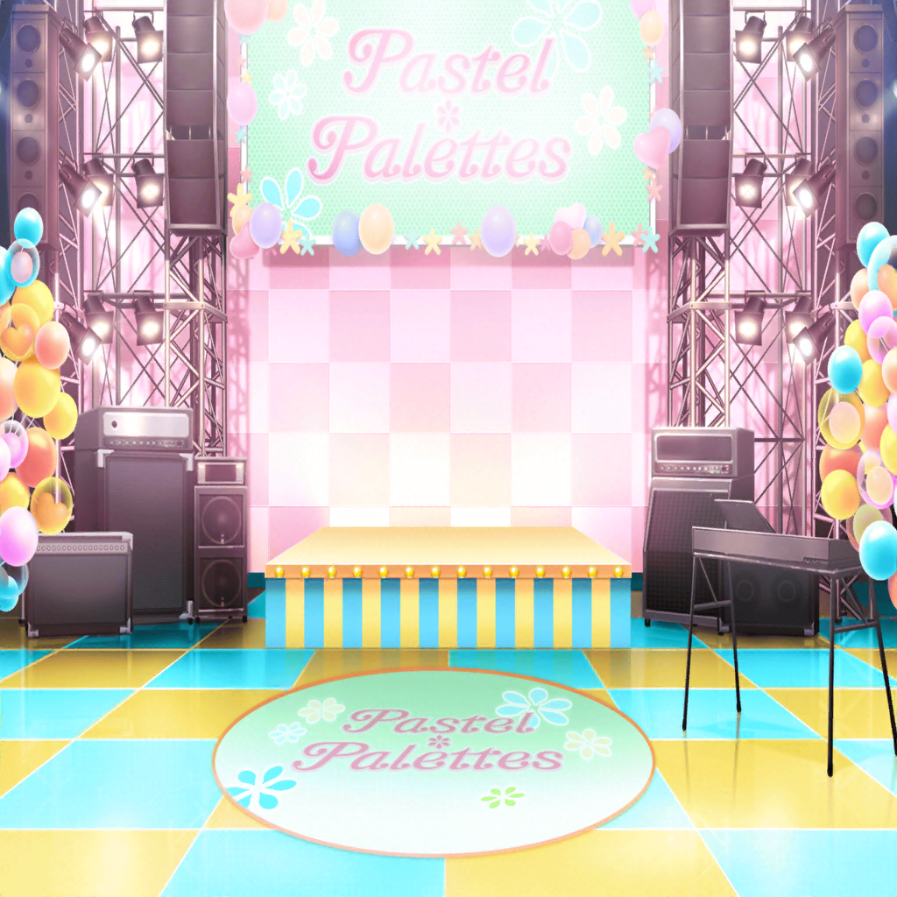

翌日
イベント会場
彩
……改めまして！
皆さーん、こんにちはー！
Pastel＊Palettes
私達、Pastel＊Palettesです！
彩
さっそく、１曲聞いてもらいましたけど、どうでしたか？
ファン
とってもよかったー！
彩
えへへ、ありがとうございます！
彩
こうしてまたリリースイベントができて嬉しいです！
皆さんと一緒に過ごせるのを楽しみにしてました〜！
イヴ
アヤさん、順調にお話していますね！
今日はとても、調子が良さそうです！
麻弥
前回のリリイベでは緊張で噛んだりしてましたからね。
この日のために、MCの練習をがんばったみたいですよ
千聖
彩ちゃんの努力が実を結んで、私も嬉しいわ
彩
そうそう、皆さんに聞いてほしいお話があるんです！
彩
この間あったことなんですけど……
犬だと思ったら猫だったっていうお話があって〜
千聖
……うん？
日菜
なんか話の順番おかしくない？
彩
えっ、あ、あれ！？
千聖
彩ちゃん、オチを最初に言ってどうするの？
彩
そ、そうだった！
彩
うう、どうしよう〜！
助けて、千聖ちゃーん！
千聖
今から助けられるかしら……？
日菜
あはは、あんなにMCの練習したのに。
やっぱり、彩ちゃんって面白いな〜
彩
ひ、日菜ちゃん……！
恥ずかしいからMCの練習してることは言わないで〜！
ファン
あはははは！
麻弥
見てください！
彩さんのMC、ものすごくウケてますよ！
イヴ
アヤさん、お見事です！
皆さんのココロをすっかり掴んでしまいましたね！
日菜
おー、彩ちゃんのズッコケMCも様になってきたねー
千聖
……よかったわね、彩ちゃん
彩
全然よくないよ〜！
またSNSに丸山とちったって書かれる〜！
麻弥
それも彩さんの魅力ですから……
彩
うう、全然フォローになってない〜
日菜
じゃ、お客さんが笑顔になったところで、
次の曲行っちゃおっか！
イヴ
はい！ 準備はばっちりで……
ファンA
だからー、やめてって言ってるじゃないですか！
ファンB
は？ なんでそんなこと言われなくちゃならないんですか？
イヴ
えっ、な、なんですか？
千聖
客席から聞こえたみたいだけど……
麻弥
わ、大変です！
お客さん同士がケンカしてますよ！
イヴ
ケ、ケンカ！ それは一大事です！
日菜
えー、せっかく空気がるんっ♪ てしてたのにー
イヴ
とにかく止めないとダメです！
ケンカはやめてくださーい！
千聖
他のお客様もいますから、
落ち着いて、冷静になりましょう
ファンA
ちょっと、人の話聞いてます？
イヴ
ぜ、全然聞いてくれません……
彩
ど、どうしよう、まだイベントの途中なのに……
こ、このままじゃめちゃくちゃになっちゃう……
麻弥
わわ！ 泣かないでください！
イヴ
ア、アヤさん！
日菜
この状況、どうしよっか……？
千聖
どうしようって……
このままじゃイベントが続けられないわ
イヴ
そ、そうです！
これはイベントの一大事です！
イヴ
（ブシドーから学んだ不屈の精神で
このケンカを止めなければなりません……！）
イヴ
（パスパレは私のブシドーで、守ってみせます！）
イヴ
おふたりとも、そこまでです！
そのケンカ、私が預かります！！